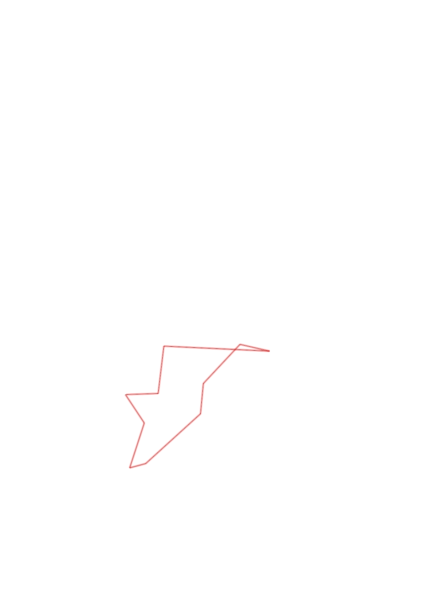
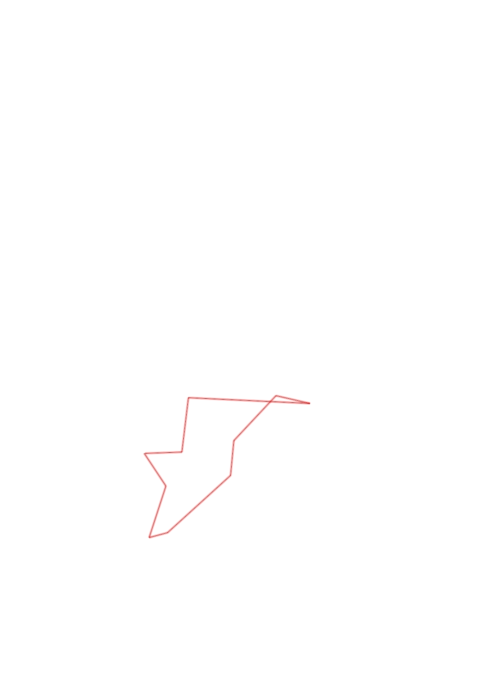

| Control |
Points |
Time Punched |
Distance |
Your Time |
Pace |
Place |
Fastest Time |
Median Time |
% Behind Fastest |
| 37 |
30 |
|
0.25 |
0:08:15 |
33:00 |
1 / 3 |
0:08:15 |
0:08:26 |
0% |
| 31 |
30 |
|
0.35 |
0:04:32 |
12:57 |
1 / 5 |
0:04:32 |
0:07:29 |
0% |
| 42 |
40 |
|
0.12 |
0:02:11 |
18:11 |
6 / 9 |
0:00:52 |
0:01:49 |
151% |
| 54 |
50 |
|
0.55 |
0:10:35 |
19:14 |
2 / 2 |
0:06:05 |
0:08:20 |
73% |
| 80 |
80 |
|
0.22 |
0:07:13 |
32:48 |
11 / 11 |
0:02:23 |
0:03:30 |
202% |
| 48 |
40 |
|
0.4 |
0:05:17 |
13:12 |
10 / 10 |
0:02:29 |
0:03:23 |
112% |
| 60 |
60 |
|
0.22 |
0:02:53 |
13:06 |
6 / 8 |
0:02:05 |
0:02:34 |
38% |
| 41 |
40 |
|
0.78 |
0:09:21 |
11:59 |
1 / 1 |
0:09:21 |
0:09:21 |
0% |
| 63 |
60 |
|
0.35 |
0:05:06 |
14:34 |
4 / 6 |
0:02:36 |
0:04:24 |
96% |
| Finish |
0 |
|
0.23 |
0:02:06 |
09:07 |
8 / 11 |
0:00:57 |
0:01:23 |
121% |
Total Distance Covered: 3.47km
Points Scored: 430
Late Penalty: 0
Final Score: 430
Total Time: 0hours 57minutes 29seconds
Efficiency: 123.92 points/km
 
